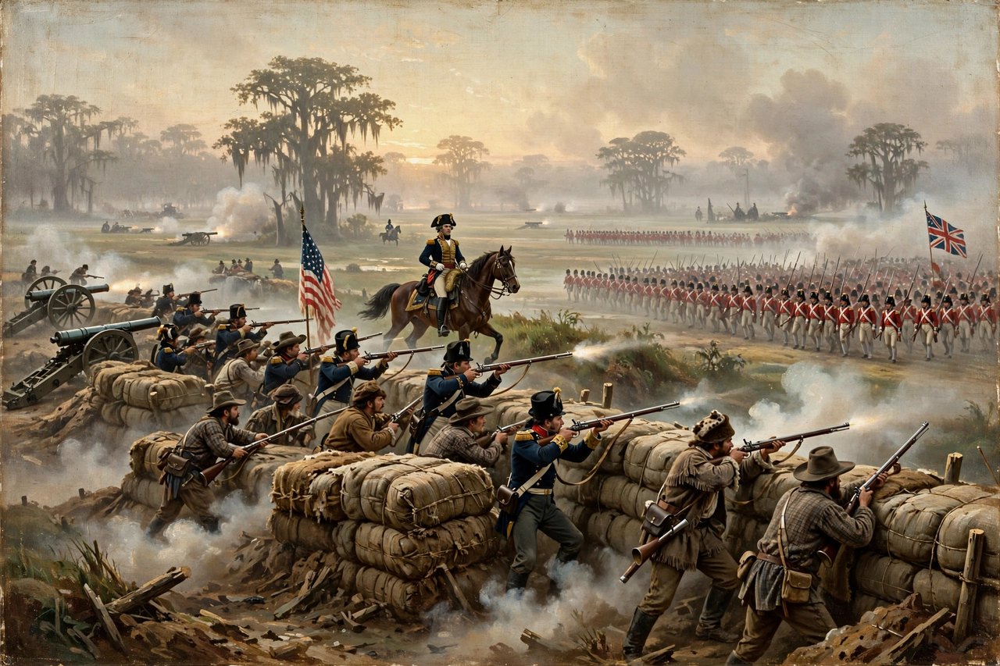

The Battle of New Orleans was fought on 8 January 1815 between the British Army, under Major General Sir Edward Pakenham, and the United States Army, under Brevet Major General Andrew Jackson, roughly 5 miles (8 km) south-east of the city of New Orleans, in the closing days of the War of 1812. The battle is famous as one of the most one-sided American victories of the war: Jackson's mixed force of regulars, militia, volunteers, free men of colour, Choctaw warriors and even Jean Lafitte's Baratarian privateers repelled the main British assault in about half an hour, inflicting some 2,000 casualties for a few dozen of their own.
The battle took place fifteen days after the signing of the Treaty of Ghent, which formally ended the war — a fact long used to call the battle needless, though the treaty still required ratification, and a British victory at New Orleans might have complicated the transfer of Louisiana. In American memory the victory became a founding legend of Jacksonian democracy, celebrated for generations on 8 January and in the song "The Battle of New Orleans".
| Battle of New Orleans | |
|---|---|
 | |
| Date | 8 January 1815 (main assault; campaign 23 December 1814 – 19 January 1815) |
| Location | Chalmette Plantation, near New Orleans, Louisiana |
| Result | Decisive American victory |
| Belligerents | United States — versus — British Empire |
| Commanders | Andrew Jackson, William Carroll, John Coffee — versus — Edward Pakenham †, John Keane, Samuel Gibbs † |
| Strength | About 5,700 — versus — about 8,000 in the assaulting columns (of ~11,000 in theatre) |
| Casualties | US: about 60–70 killed, wounded and missing — British: about 2,000, incl. Pakenham and Gibbs killed |
New Orleans commanded the mouth of the Mississippi and with it the trade of the entire American interior; Britain's Gulf campaign of late 1814 aimed to seize the city and the Louisiana territory whose transfer from France many in Britain still considered dubious. After defeating the American gunboats on Lake Borgne in December, British troops landed below the city and advanced to the Chalmette plantations. Jackson, who had raced to New Orleans and declared martial law, attacked the British camp by night on 23 December, then fell back to a strong position along the Rodriguez Canal — a disused millrace between the Mississippi and an impassable cypress swamp — and fortified it with earthworks and cotton bales behind the canal.
Artillery duels on 28 December and 1 January failed to break the American line, whose guns — some served by Lafitte's artillerymen — outshot the British batteries. Pakenham planned the main assault for dawn on 8 January: Gibbs's column against the American left, Keane's against the centre-right, with Lambert's brigade in reserve, while Colonel Thornton crossed the river to seize the artillery on the west bank and turn it on Jackson's line.
The attack collapsed in confusion and fog. The fascines and ladders needed to cross the canal and scale the rampart were forgotten by the regiment tasked with carrying them and retrieved too late; the leading brigades stood in the open under converging rifle, musket and artillery fire and were shot down in ranks. Pakenham was killed rallying his men; Gibbs and Keane were also hit, and the assault dissolved after roughly thirty minutes. Thornton's west-bank attack succeeded — the day's only British success — but came too late to matter. Lambert, succeeding to command, broke off the action and withdrew.
The British re-embarked on 19 January, abandoning the New Orleans campaign (though they took Fort Bowyer at Mobile in February before news of peace arrived). American casualties on 8 January were so light — around a dozen killed in the main action by most counts — that the result seemed providential. News of the victory and of the Ghent treaty reached Washington almost together, transforming the mood of a war-weary capital: the war ended in a glow of triumph rather than the stalemate the treaty described. Jackson became the nation's most celebrated living hero, the "Hickory" of the stump and eventually its seventh president.